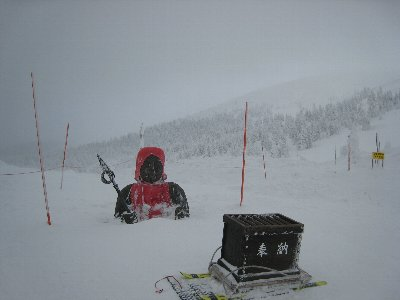
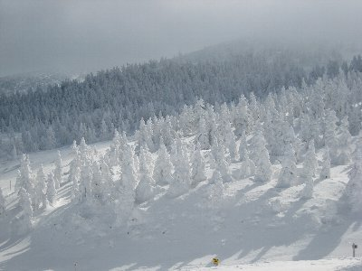
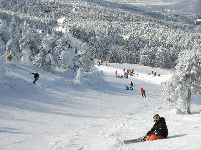

蔵王スキー | 2010年1月 幹事：シュガー |
|---|---|
| 高速道路のＥＴＣ割引が、土日休日上限1000円になっているので、どうせなら遠くに行ってみよう企画。山形県の蔵王スキー場に4人で行ってきました。もちろん車で。 金曜の夜10時に静岡を出発して、途中海老名ＳＡにて休憩、首都高速を経由し、東北自動車道へ。蔵王スキー場に着いたのは朝6時頃だったでしょうか。寝てたので覚えてませんが。 蔵王スキー場は、20年くらい前に、友人とレンタカーで来たきりですね。その時は、スキーの思い出よりも、強烈なトラブルの思い出が強く、どこに泊まったのかさえ覚えていません。（一泊は車中泊だったのは覚えてます） 今回は、ペンション？ホテル？民宿？の様なお宿です。こじんまりしているけど、小さくもないって感じ。 宿に車を停めて、リフト開始から早速滑り出しました。天気は快晴。リフトを乗り継いで上へ上へと向かいます。 | |
 ちょいと曇ってる？ |  枝がまっ白 |
| 私は蔵王2回目だけど、やっぱり広いね。上に行くまで色々乗り継いで行かなきゃならない。（ロープウェイもあるけど） 上に行くほど、樹木に雪と言うか氷が付いて、白い樹木になり、一番上まで行く有名な樹氷になるんですよね〜。 真っ白な枝ぶりの樹木も、青い空と相まってすごく綺麗！休憩や昼食を挟みながら、一番上まで行ってみることにしました。 途中の中継駅から上に行くには、前に来た時はロープウェイだったような気がしますが、今は綺麗な大きいゴンドラタイプに代わってました。最大18名くらい乗れるのかな。普通のゴンドラと違い、掴んでいるロープが2本です。 ちなみに、蔵王スキー場の一番高い場所に行くには、このゴンドラに乗るしかありません。だから、結構混むんです。 山頂駅に着くと、強風と雲が待ち受けており、視界は悪し、外にいると劇的に体が冷えてきます。樹氷も見えるけど、視界が悪く写真は悪い。 なんとか、雪に埋まったお地蔵さんだけを眺めて、早々に滑り下りました。ほんとに寒いもん。上だけ天気悪いんだよな〜 | |
 天気悪く寒い山頂駅 |  埋没お地蔵さん |
| そんな感じで一日目終了〜 宿に帰っての楽しみは夕食ですよね。この宿は、夕食にシャブシャブか、すき焼きを選べて、確かすき焼きチョイスしたはずですが、連絡ミスなのか「どっちか聞いてない」ってことで、二つ同時に楽しめる鍋（仕切りがあるやつね）が用意されてました。 なるほど、どちらでも肉は一緒だから、どっちでもいいのか！。 夕食は豪華です。付け合わせとか副菜とかが沢山ついて、一人500円でプチステーキが付くってことで注文したステーキも、そこそこ大きく、食べ応えがありました。うまい！幸せ〜 ビールナイス！ 部屋に帰っても暇なので、温泉巡りに出発！ ちょっと外歩くと寒いけど、まずは温泉街の外湯「川原湯」へ。200円です。 ここは、共同浴場で洗い場とか蛇口とかないけれど、源泉に浮かぶ温泉だそうで、湯船の下と横がスノコ状になってます。周りすべて温泉！暗いから気が付きにくいけどね。 なんだか、のんびりしていて超〜気持ち好いんですけど♪ 前に来た時もここに入ったような・・・・ お土産屋を冷やかし、もう一軒！ 今度は日帰り温泉施設「源七露天の湯」。宿で入浴券買ったら安かった。幾らか忘れたけど300円？だったかな？ ここは、広い脱衣所と、内湯＋洗い場と露天があります。露天サイコーです。雪見で気持ちい〜♪ | |
 今日は良い天気♪ |  立派な樹氷ですな〜 |
| 翌日。本日は静岡に帰らねばならないから、2時まで滑ろう！って事で朝からガッツリ！ 昨日よりもガッツリと合宿訓練があり、自分の滑り下手さを実感。悪いところを指摘されるので良い経験ですが、次回まで覚えているか不安です。 さて、昨日のリベンジって事で再度山頂駅へ。今日は晴れ！ 樹氷もすごいね。かっこいい！大きな樹氷って、この山頂駅付近しかないから、ほんと此処まで来なければならないんだよね〜。でも、来た甲斐はあります。 残念ですが、２時にてスキー終了。帰りがけに、もう一軒温泉へ。今度は大平ホテル。ここも宿で安く入浴券が買えました。 お土産屋でちょいとお酒を買って、玉こんにゃく食べて、帰路につきました。 高速料金も幾らかわからなかったけど、片道3000円台だったかな？首都高と首都近郊エリア通ったからね。でも、安かった。 静岡から蔵王スキー場まで、約570㎞。7時間位でしょうか。泊まりでなければいけないし、高速代考えたら今だけ企画だったけど、楽しかったです〜 | |
|  山頂駅からの樹氷眺め |  樹氷の中にコースがあります |
| 写真＆コメント ｂｙ べっしー | |